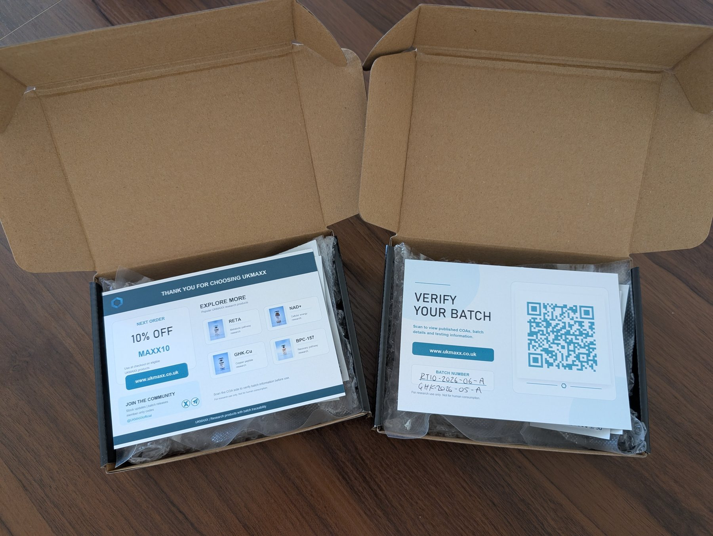
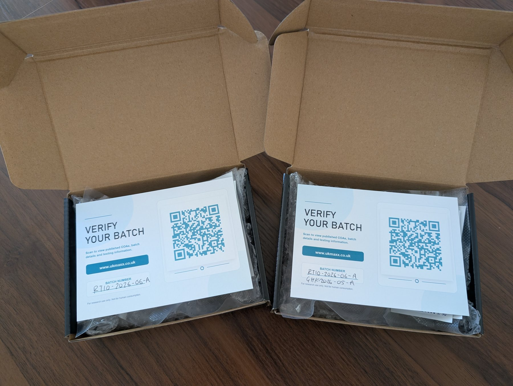
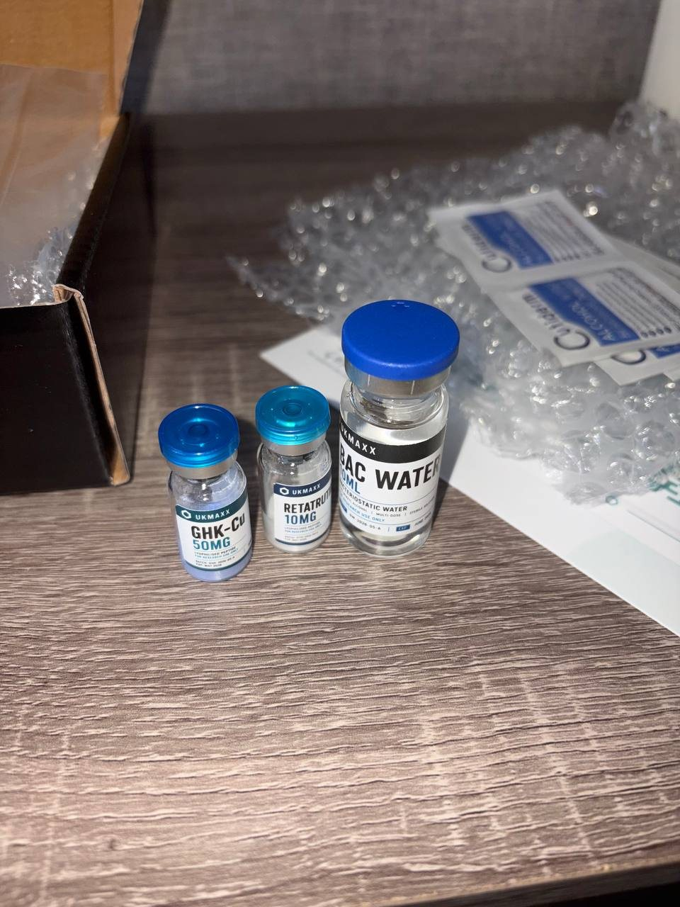
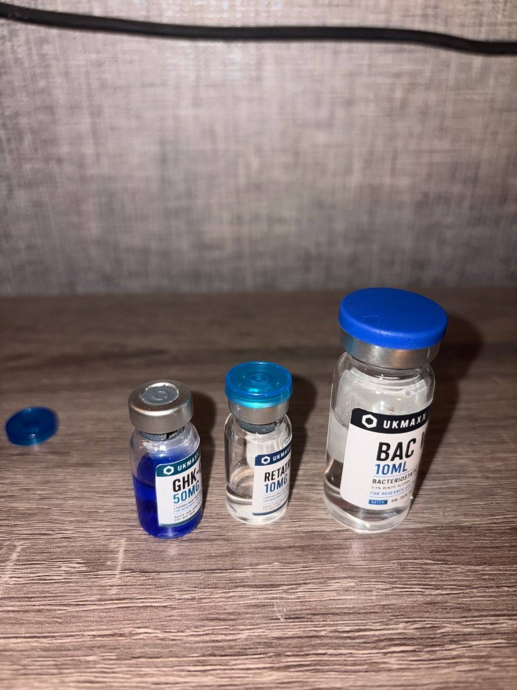

A product label should not be the end of the evidence trail. This guide uses real UKMAXX order photographs to show how protective packing, batch references, public records and original laboratory reports connect the physical product to documented evidence.
What does a research-peptide order actually look like when it arrives?
Product pages can describe testing, stock and dispatch. The more useful question is whether those claims remain visible when the parcel is opened. A supplied vial should be identifiable, its batch should be verifiable and the original analytical record should be available without asking the supplier to provide it privately.
This article follows that chain using genuine UKMAXX packing and customer-submitted photography. It documents the order and verification process only; it does not provide preparation, dosing, administration or application guidance.
What should you expect from a UK research-peptide supplier?
At minimum, the product received should match the order, arrive protected from ordinary handling damage and carry enough information to identify the relevant batch. Where independent testing is claimed, the buyer should be able to inspect the source report rather than rely on a supplier-written badge or cropped screenshot.
Clearly labelled products protected for domestic dispatch.
A batch reference that corresponds with the public record.
Access to the independent laboratory report behind the summary.
1. Packing the order
UKMAXX orders are packed in protective internal boxes before entering the outer postal packaging. The photographs below show the products secured with bubble wrap alongside order inserts, alcohol wipes and batch-verification material.
The purpose is practical: keep the glass vials protected and place the verification route inside the same parcel as the products it describes. The presentation is intentionally compact and discreet.

2. Verifying the supplied batch
The batch card is the bridge between the product in hand and the public evidence online. It directs the customer to the UKMAXX batch checker, where the code printed on the supplied vial can be matched against the relevant release record.
A public record can show the named product, batch reference, test date, measured result, starting batch size, current availability and release status. From there, the original laboratory report can be opened directly.

Do not stop at “COA available.” Match the supplied batch code, inspect the reported result and open the original laboratory record.
3. What a COA does—and does not—establish
A Certificate of Analysis records what a laboratory found in the sample it received. Depending on the test, that may include identity, purity and measured content. The report is important evidence, but its scope should be described accurately.
Independent batch testing does not mean that every individual vial was separately analysed. The laboratory result represents the submitted sample from the named batch. Traceability matters because it connects that tested sample to the wider batch being supplied.
- Purity describes the proportion of detected material assigned to the target compound within the scope of the method.
- Assay or measured content addresses the quantity found in the submitted sample.
- Batch identity connects the physical unit to the record being presented.
- Release status shows whether UKMAXX accepted or rejected the batch after reviewing its evidence.
The UKMAXX guide to reading a peptide COA explains these fields in more detail.
4. What a delivered UKMAXX order looks like
This customer-submitted photograph shows the order after delivery: labelled GHK-Cu 50mg, RETA 10mg and BAC Water products alongside the internal box, protective packing and wipes included in the parcel.

Customer photography is valuable because it records what arrived outside a controlled product shoot. It helps distinguish the physical fulfilment experience from promotional imagery while leaving the analytical claims to the independent report.
5. Customer-submitted product photography
The next photograph was also supplied by a verified customer. It shows GHK-Cu, RETA 10mg and BAC Water products as photographed by the customer.

Appearance alone cannot establish identity, purity, concentration, sterility or suitability. Those questions remain matters for appropriate analytical evidence and the researcher's own controlled procedures.
6. Genuine verified-order feedback
Photography shows the parcel; customer feedback adds context to the fulfilment and verification experience. Reviews remain subject to approval, and verified-order status is tied to the order record rather than added as a marketing label.
“Quid comms, direct link on the website to verifiable authenticity certificate. Dispatched same day very quick delivery. Discreet packing but very secure along with a batch verification card and number to double check authenticity. Can’t ask for more really very impressed.”
7. Why public batch traceability matters
A vial can carry an impressive label while leaving the buyer unable to answer basic questions: Which batch is this? What sample was tested? How much product belonged to that batch? Is it still active? What happened to batches that failed?
UKMAXX publishes active, archived and rejected records because a passing COA is more useful when it sits inside a visible release history. Starting batch sizes and remaining stock provide additional context, while retained rejected records show that non-release decisions are not silently removed.
This does not make the supplier the laboratory. It keeps the independent evidence, stock record and physical batch connected in one public chain. Read more in Beyond the COA: Why Batch Size and Traceability Matter.
A practical supplier-verification checklist
Whether considering UKMAXX or another research supplier, these checks separate documented evidence from presentation:
- Identify the batch on the physical product.The supplied vial should carry a clear reference, not only a product name.
- Match it to a public record.The record should describe the same compound and batch.
- Read purity and measured content separately.A high purity percentage does not by itself establish the quantity in the vial.
- Open the original laboratory report.A supplier summary or screenshot should not be the final source.
- Check the status of the batch.Released, archived and rejected records should not be presented as interchangeable.
- Look for real fulfilment evidence.Consistent product labels, packing and verified customer records support operational credibility.
- Keep claims within the evidence.Testing documents composition; it does not prove safety, effectiveness or a clinical outcome.
From physical product to original report
The complete chain should be short enough to follow: product label → batch code → public UKMAXX record → original independent laboratory report. The customer should not need to accept a supplier's word at any point where the underlying record can be made available.
Start with the batch record.
Search a UKMAXX batch, compare its published result and current status, then open the original independent laboratory report.
Customer photographs are reproduced with permission and relate to verified UKMAXX orders. This article documents packaging, fulfilment and batch verification only. It is not medical advice or preparation, dosing, administration or application guidance. UKMAXX products are supplied strictly for laboratory and in-vitro research use only and are not intended for human consumption.